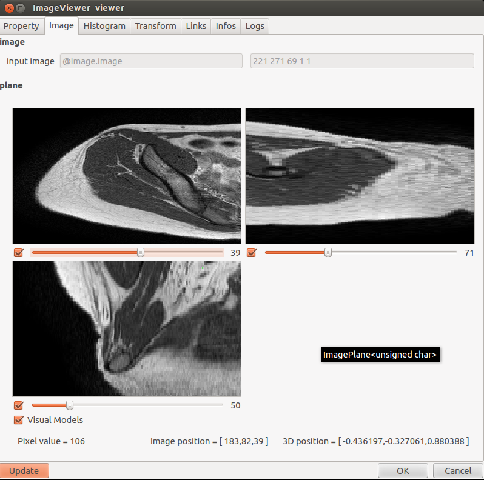
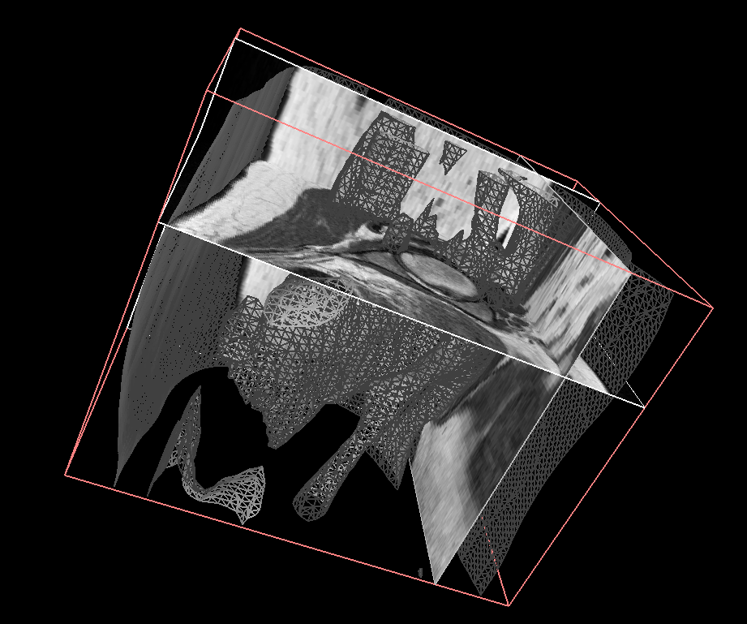

Image marchingCube Example
This marchingCube Example shows an example of the Image plugin, which demonstrates the algorithm of MarchingCube.
It constructs a surface mesh from a 3D medical image. A blur filter is applied to the image.
To run it, you need to load image Plugin using the Plugin Manager of the GUI, or the command line.

